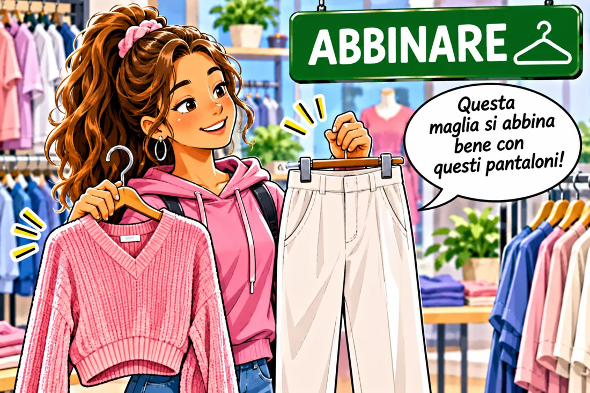
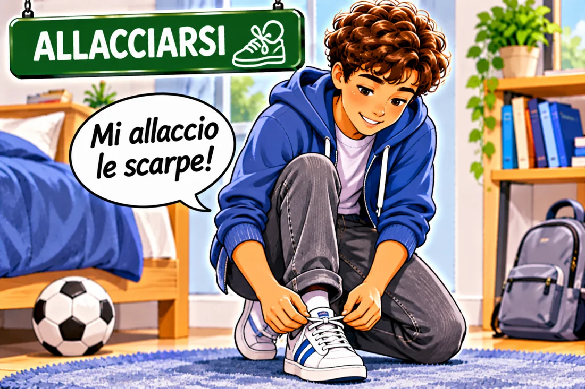
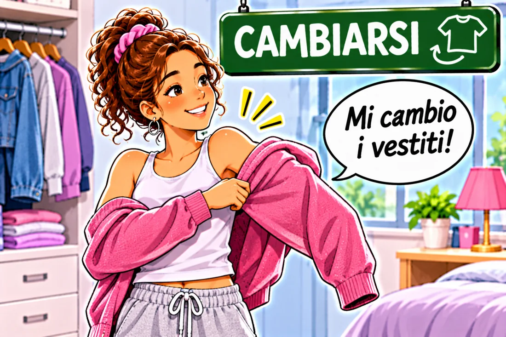
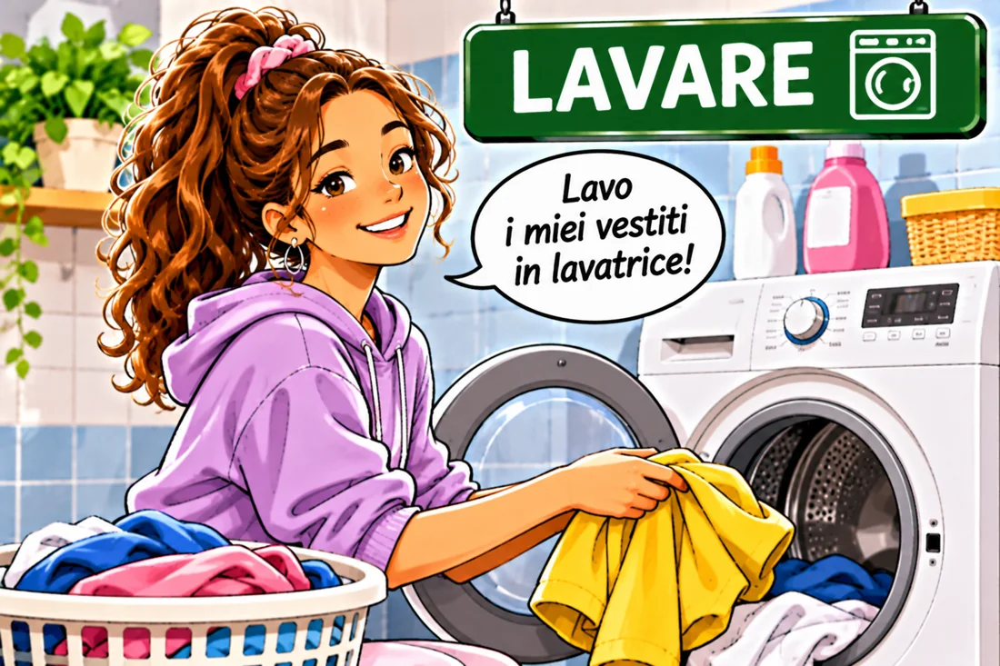
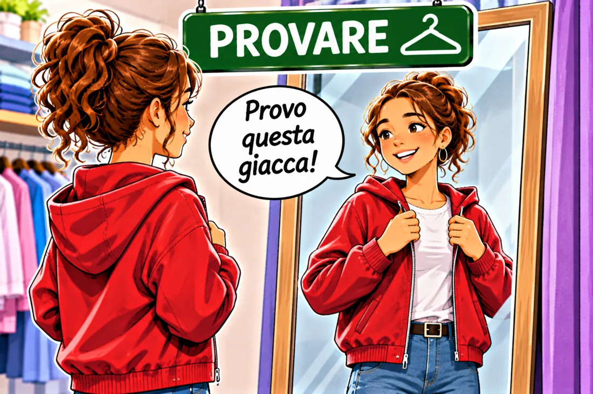
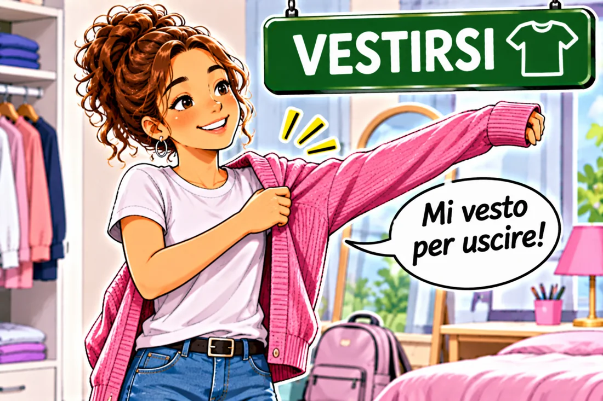

ABBINARE
to match
Abbino la maglietta ai pantaloni.
Coniuga il verbo ↗Clothes and fashion
10 verbi utili · Livello A1–A2

to match
Abbino la maglietta ai pantaloni.
Coniuga il verbo ↗
to tie / fasten (one’s own)
Mi allaccio le scarpe.
Coniuga il verbo ↗
to change clothes
Mi cambio dopo la palestra.
Coniuga il verbo ↗to buy
Compro una giacca nuova.
Coniuga il verbo ↗to wear / put on
Indosso una felpa blu.
Coniuga il verbo ↗
to wash
Lavo i vestiti in lavatrice.
Coniuga il verbo ↗to put on
Metto il cappotto quando fa freddo.
Coniuga il verbo ↗
to try on
Provo un paio di scarpe.
Coniuga il verbo ↗to choose
Scelgo una camicia bianca.
Coniuga il verbo ↗
to get dressed
Mi vesto prima di uscire.
Coniuga il verbo ↗